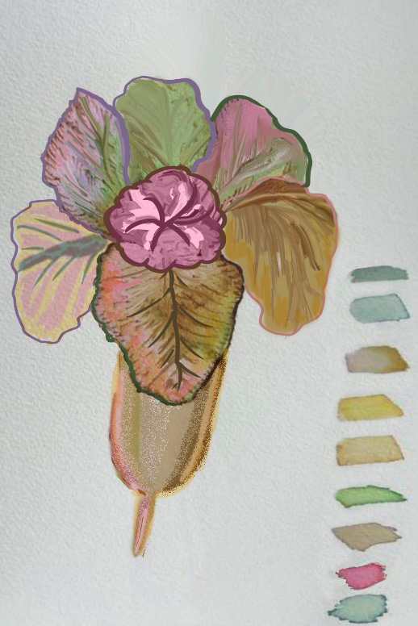

Procedures for extracting colours from flowers
An artist is required to follow the following procedures in extracting colours from flowers:
Gathering the flower petals of different colours: Collect the fresh flowers and carefully pick the petals off each stem and separate them into bowls according to the petals colours.
Use hot water: Pour a small amount of hot water over petals in each bowl and stir them to release the colour. You may use a wooden spoon to stir the petals.
Alter the shades: Squeeze a small amount of lemon to lighten the colours and bicarbonate of soda to darken them. The acidity of the lemon will alter the pH of the colour and take it to almost neon levels, whilst the bicarbonate of soda will make the dye more alkaline and deepen the colour. Figure 3.18 shows a painted image using colour from flower petals.

The painting procedure using colours from flowers and leaves
Use watercolour brushes: use brushes to paint the same way as you can do for normal colours. Apply several layers of the painting after that allow them to dry.
Leave for dry and display: The painted artwork should be given time to dry.
Note: These procedures of creating colours from flowers can be applicable even